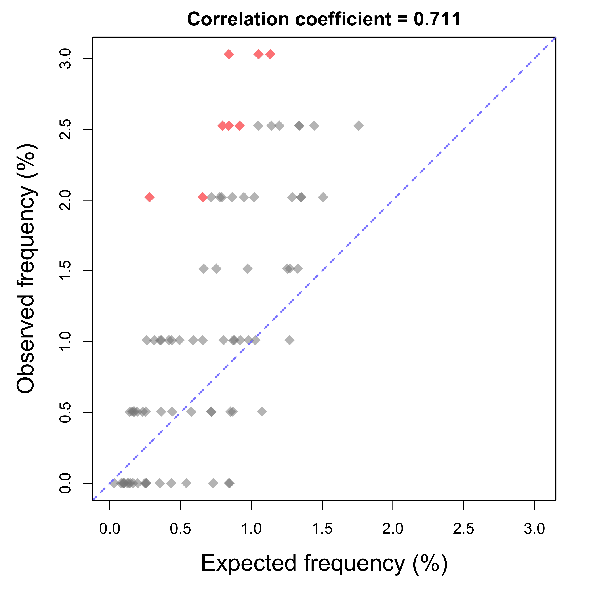
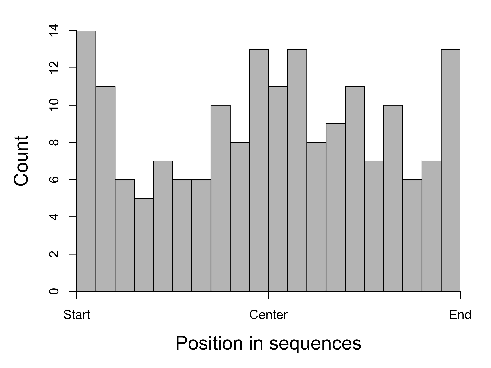

This analysis reports of the frequency and location of a DNA motif in a given set of sequences, and compares the observed frequency to expected frequency.
RoCA for motif frequency in a set of DNA sequences
Table 1. Length and GC content of 81 DNA sequences.
| Min. | 1st Qu. | Median | Mean | 3rd Qu. | Max. | |
|---|---|---|---|---|---|---|
| Length (bp) | 201.00 | 201.00 | 201.00 | 201.00 | 201.00 | 201.00 |
| GC (%) | 25.87 | 46.27 | 56.22 | 56.88 | 69.65 | 86.57 |

Figure 1. Expected vs. observed frequency of motif AAAG in sequences. Each diamond represents one sequence and its expected frequency of the motif is calculated according to its base frequency. Both of the original and reverse-complemented sequence of the motif were counted Difference between expected and observed frequencies was tested by Poisson test and the sequences with p value less than 0.05 are highlighted.

Figure 2. Distribution of matches to motif within the sequences, all of them combined. Sequence length was adjusted so the positions are relative.
Check out the RoCA home page for more information.
To reproduce this report:
Find the data analysis template you want to use and an example of its pairing YAML file here and download the YAML example to your working directory
To generate a new report using your own input data and parameter, edit the following items in the YAML file:
Run the code below within R Console or RStudio, preferablly with a new R session:
if (!require(devtools)) { install.packages('devtools'); require(devtools); }
if (!require(RCurl)) { install.packages('RCurl'); require(RCurl); }
if (!require(RoCA)) { install_github('zhezhangsh/RoCAR'); require(RoCA); }
CreateReport(filename.yaml); # filename.yaml is the YAML file you just downloaded and editedIf there is no complaint, go to the output folder and open the index.html file to view report.
## R version 3.5.1 (2018-07-02)
## Platform: x86_64-apple-darwin15.6.0 (64-bit)
## Running under: macOS High Sierra 10.13.6
##
## Matrix products: default
## BLAS: /System/Library/Frameworks/Accelerate.framework/Versions/A/Frameworks/vecLib.framework/Versions/A/libBLAS.dylib
## LAPACK: /Library/Frameworks/R.framework/Versions/3.5/Resources/lib/libRlapack.dylib
##
## locale:
## [1] en_US.UTF-8/en_US.UTF-8/en_US.UTF-8/C/en_US.UTF-8/en_US.UTF-8
##
## attached base packages:
## [1] grid stats4 parallel stats graphics grDevices utils
## [8] datasets methods base
##
## other attached packages:
## [1] gplots_3.0.1
## [2] arrangements_1.1.5
## [3] combinat_0.0-8
## [4] seqinr_3.4-5
## [5] e1071_1.7-2
## [6] BSgenome.Hsapiens.NCBI.GRCh38_1.3.1000
## [7] Agri_0.0.0.9000
## [8] rGADEM_2.30.0
## [9] seqLogo_1.48.0
## [10] BSgenome_1.50.0
## [11] rtracklayer_1.42.1
## [12] Biostrings_2.50.1
## [13] XVector_0.22.0
## [14] GenomicFeatures_1.34.1
## [15] AnnotationDbi_1.44.0
## [16] Biobase_2.42.0
## [17] GenomicRanges_1.34.0
## [18] GenomeInfoDb_1.18.1
## [19] IRanges_2.16.0
## [20] S4Vectors_0.20.1
## [21] BiocGenerics_0.28.0
## [22] htmlwidgets_1.3
## [23] DT_0.5
## [24] kableExtra_0.9.0
## [25] awsomics_0.0.0.9000
## [26] yaml_2.2.0
## [27] rmarkdown_1.10
## [28] knitr_1.20
## [29] RoCA_0.0.0.9000
## [30] RCurl_1.95-4.11
## [31] bitops_1.0-6
## [32] usethis_1.4.0
## [33] devtools_2.0.1
##
## loaded via a namespace (and not attached):
## [1] matrixStats_0.54.0 fs_1.2.6
## [3] bit64_0.9-7 progress_1.2.0
## [5] httr_1.3.1 rprojroot_1.3-2
## [7] tools_3.5.1 backports_1.1.2
## [9] R6_2.3.0 KernSmooth_2.23-15
## [11] DBI_1.0.0 colorspace_1.3-2
## [13] ade4_1.7-13 withr_2.1.2
## [15] prettyunits_1.0.2 processx_3.2.0
## [17] bit_1.1-14 compiler_3.5.1
## [19] cli_1.0.1 rvest_0.3.2
## [21] xml2_1.2.0 desc_1.2.0
## [23] DelayedArray_0.8.0 caTools_1.17.1.1
## [25] scales_1.0.0 readr_1.3.1
## [27] callr_3.0.0 stringr_1.3.1
## [29] digest_0.6.18 Rsamtools_1.34.0
## [31] base64enc_0.1-3 pkgconfig_2.0.2
## [33] htmltools_0.3.6 sessioninfo_1.1.1
## [35] highr_0.7 rlang_0.4.0
## [37] rstudioapi_0.8 RSQLite_2.1.1
## [39] shiny_1.2.0 jsonlite_1.5
## [41] gtools_3.8.1 crosstalk_1.0.0
## [43] BiocParallel_1.16.2 magrittr_1.5
## [45] GenomeInfoDbData_1.2.0 Matrix_1.2-15
## [47] Rcpp_1.0.0 munsell_0.5.0
## [49] stringi_1.2.4 MASS_7.3-51.1
## [51] SummarizedExperiment_1.12.0 zlibbioc_1.28.0
## [53] pkgbuild_1.0.2 blob_1.1.1
## [55] gdata_2.18.0 promises_1.0.1
## [57] crayon_1.3.4 lattice_0.20-38
## [59] hms_0.4.2 ps_1.2.1
## [61] pillar_1.3.0 biomaRt_2.38.0
## [63] pkgload_1.0.2 XML_3.98-1.16
## [65] glue_1.3.0 evaluate_0.12
## [67] remotes_2.0.2 httpuv_1.4.5
## [69] testthat_2.2.1 assertthat_0.2.0
## [71] mime_0.6 xtable_1.8-3
## [73] later_0.7.5 class_7.3-14
## [75] viridisLite_0.3.0 tibble_1.4.2
## [77] GenomicAlignments_1.18.0 memoise_1.1.0
## [79] gmp_0.5-13.5END OF DOCUMENT